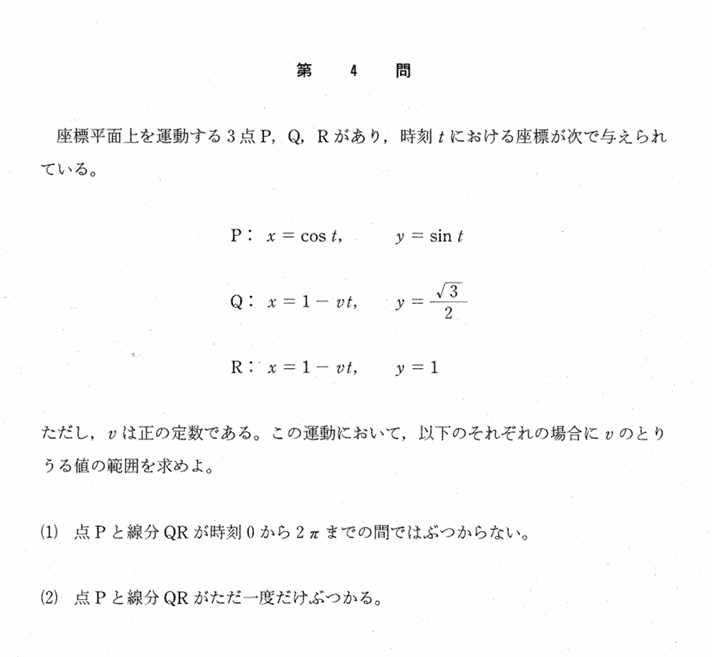

2000年 第4問
数III微分

分析
問題設定が単純であるのに反し、代数的なアプローチをしなければ答えにたどり着けないところが、とても面白く、この問題の難しい点でもある。
(1)は代数的な問題に帰着させるところができれば、少しやることは多いが現実的に解ききることは可能である。しかし、代数に帰着させるところや解を持たない範囲の処理など、ちゃんと論理的に議論できているか否かを判別できる良問である。
(2)は難問である。この問題を難しくしているのは、ただ1つの解をもつことの処理である。(1)の考え方を用いると、次の方程式の解がただ一つであるvの範囲を求める問題に帰着できる。
$$vt=1-\cos t\quad \left(\frac{\pi}{3}+2n\pi\leq t\leq \frac{2\pi}{3}+2n\pi\ ,\ n=0,1,2,\cdots\right)$$
しかし、この問題はa=f(t)に定数分離した場合は、定義域を考えたf(t)の形が結局分からないこと、at=g(t)に定数分離した場合も、大体の答えは予測できるかもしれないが厳密な議論には至らない。
まずa=f(t)として各nに対して解を持つ範囲を一般化して求め、nが2以上のときは2つ以上解を持つことをいう必要がある。定数分離a=f(t),at=g(t)の2つを基に考えることで答えが見えてくる。
思考力や論理性は問えてはいるが、限られたスペースと時間では受験生の差をつけることは難しかったかもしれない。むしろ、この問題に執拗に取り組む人と全体を俯瞰して戦略的に解ける人を振り分けるという、戦略性を問うている問題であるかもしれない。
誘導
式は同じであるが条件が違い、(2)の誘導として(1)があるとはいいにくい。一気に(2)を問うと差がつけられないがために(1)があるように思われる。